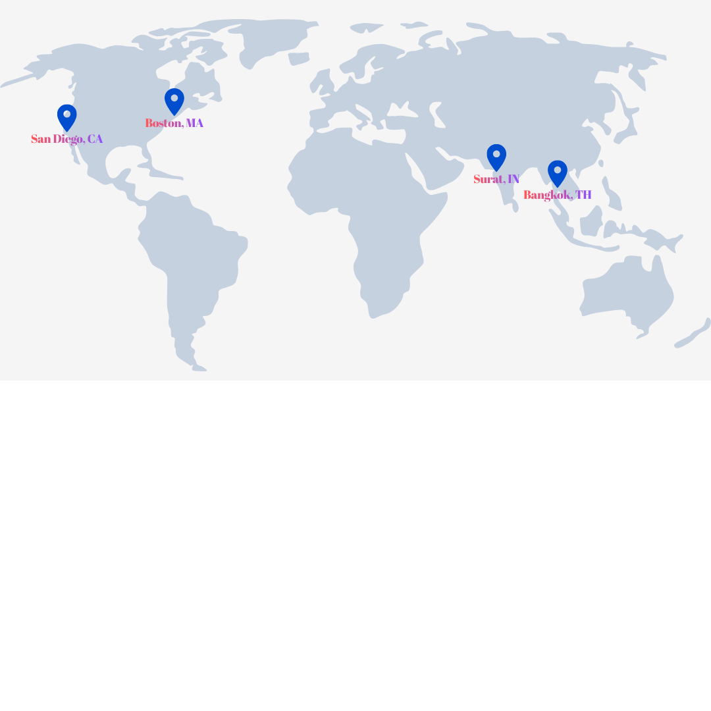
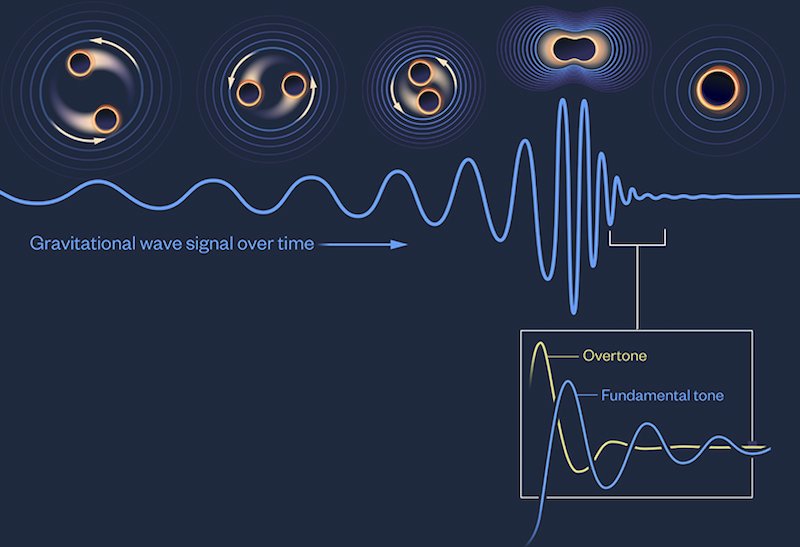
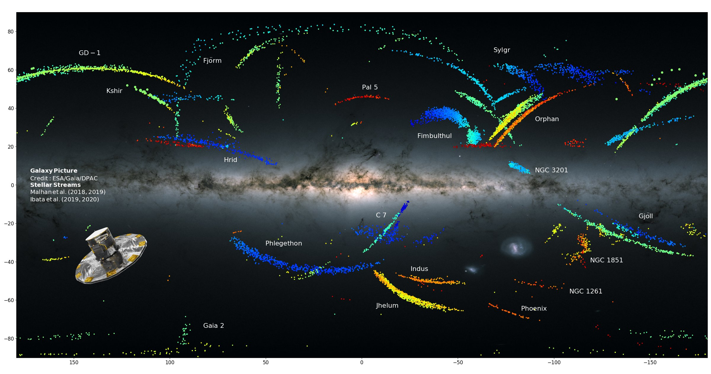
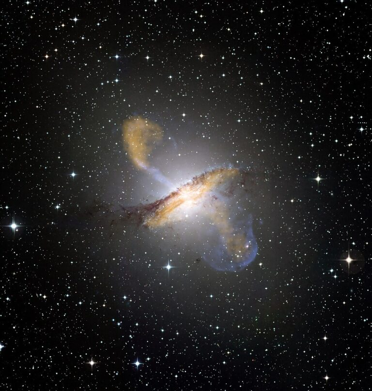

About

Places I have lived
I grew up in a city called Surat in India and have lived in Bangkok (Thailand) and San Diego (United States), each shaping my academic journey. I pursued my B.S. in Physics with a Specialization in Astrophysics at the University of California, San Diego. I have been fascinated by art since childhood, initially through painting and later through digital creation. This creative side has strengthened my sense of color, design, and visual intuition, which I often bring into my scientific work. I hope to continue exploring the intersection of astronomy and computational methods as I pursue a Ph.D.
Throughout my academic journey, my research has spanned different messengers of the universe, gravitational waves, electromagnetic radiation, and dark matter. I have worked on topics including low-latency gravitational-wave detection, understanding dark matter's properties and parameter estimation using stellar stream dynamics, and probing the interstellar medium in star-forming galaxies. I’m interested in using machine learning and simulations to explore the universe, combining deep learning, probabilistic modeling, and large-scale data analysis to study the different messengers of the universe.
You can find more details about my research here.
Personal Interests
Beyond astronomy, I am an avid sports fan and enjoy watching cricket, basketball, football, and tennis. I am also passionate about photography, capturing landscapes and nature, and astrophotography when possible. Additionally, I am a dedicated supporter of the Ferrari Formula 1 team.
Research
1. Accelerating Gravitational Wave Astronomy with Machine Learning
(Summer 2025 - Present)
Advisor: Prof. Erik Katsavounidis, MIT/LIGO Lab

Image credit: Gravitational-wave signal captured by LIGO-Virgo detectors, L. Reading-Ikkanda/Simons Foundation
Motivation
Methods & Contributions
- I focus on analyzing gravitational-wave data from LIGO detectors to identify astrophysical sources and enhance the sensitivity of searches using AI and Machine Learning methods.
- Presented at the NSF HDR Ecosystem Conference at OSU.
Impact
2. Stellar Streams, Dark Matter Substructure, and Machine Learning
(Summer 2023 – Summer 2025)
Advisors: Prof. Javier Duarte and Prof. Tongyan Lin, UC San Diego

Image credit: Stellar Streams from Gaia, Malhan K., 2021
Motivation
One of the most engaging questions in astrophysics is understanding the nature of dark matter, which constitutes most of
the mass in the universe, but remains undetected beyond its gravitational effects. Stellar streams, tidally stretched remnants
of dwarf galaxies and globular clusters orbiting the Milky Way serve as sensitive probes of dark matter substructure. When dark matter
subhalo (a small clump of dark matter) passes through a stream, it leaves behind gravitational perturbations, providing a means to infer
the properties of dark matter on small scales.
Methods & Contributions
- Developed and implemented Markov Chain Monte Carlo (MCMC) methods to recover subhalo impact parameters (mass, velocity, time of impact, impact parameter, and radius) by evaluating true likelihood.
- Addressed computational challenges in streams with expensive likelihood functions by training a Graph Neural Network (GNN) to perform simulation-based inference.
- Generated thousands of stellar stream simulations and optimized GNN hyperparameters through hundreds of training iterations to improve inference accuracy.
- Utilized high-performance computing resources at the San Diego Supercomputer Center for large-scale data analysis.
- Presented findings at the 243rd American Astronomical Society Meeting.
Impact
This research advances our ability to constrain dark matter properties at small scales, testing predictions of different
dark matter models (e.g. cold vs. warm dark matter). The application of machine learning and probabilistic modeling to astrophysical
simulations pave the way for more efficient and accurate dark matter studies in the era of large-scale sky surveys,
such as those conducted by the Rubin Observatory.
3. Investigating Metal-Poor, Star-Forming Dwarf Galaxies as Analogs for the Early Universe
(Summer 2022)
Advisor: Dr. Peter Senchyna, Carnegie Observatories
Image credit: NGC 2070, ESO/IDA/Danish
Motivation
Understanding the conditions of the early universe (z > 6) is crucial for tracing the formation and evolution of the first galaxies.
However, high-redshift galaxies are faint and difficult to observe directly, making local analogs—nearby metal-poor, star-forming dwarf
galaxies, valuable laboratories for studying early galaxy formation. Observations of distant galaxies have shown an unexpected enhancement
in [O III]/[C II] emission, suggesting possible differences in interstellar medium (ISM) structure between the early universe and the present day.
This project aimed to investigate these emission properties in local analogs to better understand how ISM conditions evolve over cosmic time.
Methods & Contributions
- Used integral field spectroscopy from SOFIA (Stratospheric Observatory for Infrared Astronomy) to analyze the far-infrared [O III] and [C II] emission in metal-poor, star-forming galaxies.
- Examined relationships between [O III]/[C II] emission flux and galactic properties such as star formation rate (SFR) and metallicity to probe ISM conditions.
- Found that, unlike high-redshift galaxies where [C II] emission appears suppressed, local analogs exhibit strong lower ionization emission in photodissociation regions, suggesting key structural differences in the ISM.
- Presented findings at the Carnegie Summer Research Symposium and later secured funding to present at the 241st American Astronomical Society Meeting.
Impact
This research provides insight into the ionized gas conditions and ISM structure of early galaxies, helping refine models of star formation and chemical enrichment in the universe’s
first billion years. By analyzing local analogs, we gain a more detailed understanding of how cooling of gas, its ionization states, and feedback processes shape the evolution of galaxies across cosmic time.
4. Black Hole Outflows and Galaxy Evolution
(Fall 2022)
Advisor: Prof. Alison Coil, UC San Diego

Image credit: AGN jets of Centaurus A, ESO/WFI (Optical); MPIfR/ESO/APEX/A.Weiss et al. (Submillimetre); NASA/CXC/CfA/R.Kraft et al. (X-ray)
Motivation
Supermassive black holes (SMBHs) residing at the centers of galaxies play a crucial role in shaping galactic evolution. When actively accreting matter, SMBHs launch powerful outflows, which influence star
formation, gas dynamics, and overall galaxy structure. Understanding the kinematic properties of these outflows is essential for determining their impact on galaxy evolution and the feedback mechanisms that
regulate star formation. This project aimed to analyze AGN-driven outflows in nearby galaxies and refine spectral modeling techniques to better characterize their kinematics.
Methods & Contributions
- Conducted spectral analysis and kinematic modeling of outflows from accreting SMBHs.
- Used IDL’s IFSFIT software to perform a two-component analysis on AGN emission spectra, evaluating velocity dispersion and kinematic structure.
- Implemented Python-based modeling to further refine the spectral decomposition of AGN outflows.
- Found that the existing two-component model was insufficient to capture the full kinematic structure of the outflows, necessitating the use of a three-component model for accurate representation.
Impact
By identifying the need for a three-component kinematic model, this research contributed to a more precise understanding of SMBH-driven outflows and their role in regulating gas dynamics within galaxies.
These findings highlight the complexity of AGN feedback and improve our ability to model how SMBH activity influences galaxy evolution over cosmic time.